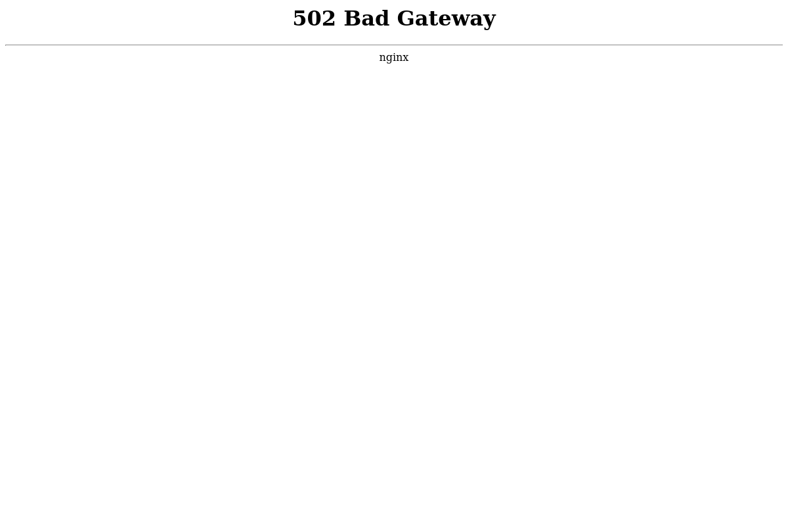
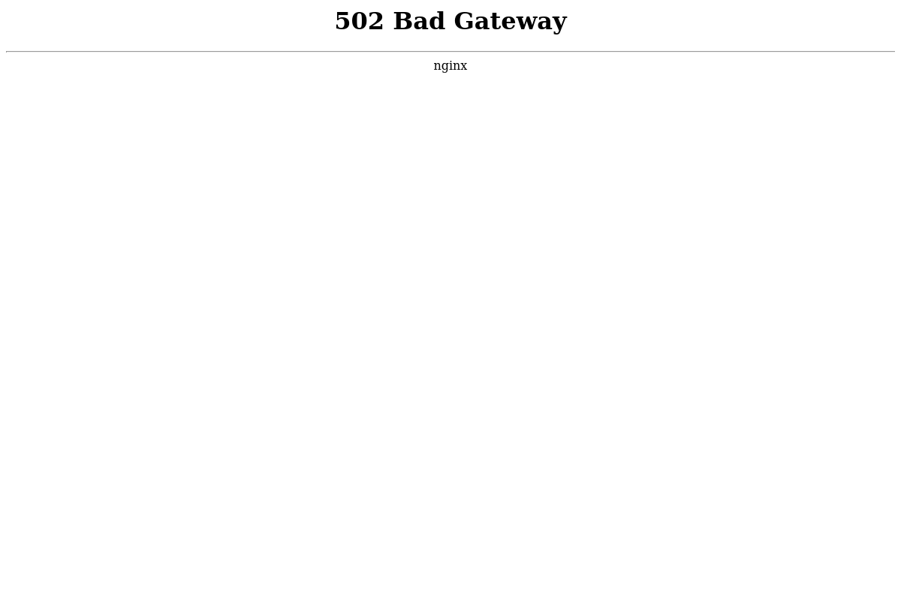

Screeshot
Port 80 Port 443
 

Dig Info
; <<>> DiG 9.11.4-2-Debian <<>> 101-229-47-212.rev.cloud.seek.com.au
;; global options: +cmd
;; Got answer:
;; ->>HEADER<<- opcode: QUERY, status: NOERROR, id: 21826
;; flags: qr rd ra; QUERY: 1, ANSWER: 4, AUTHORITY: 0, ADDITIONAL: 1
;; OPT PSEUDOSECTION:
; EDNS: version: 0, flags:; MBZ: 0x0005, udp: 512
;; QUESTION SECTION:
;101-229-47-212.rev.cloud.seek.com.au. IN A
;; ANSWER SECTION:
101-229-47-212.rev.cloud.seek.com.au. 5 IN CNAME cloud-seek-com-au-1839719694.ap-southeast-2.elb.amazonaws.com.
cloud-seek-com-au-1839719694.ap-southeast-2.elb.amazonaws.com. 5 IN A 54.66.151.204
cloud-seek-com-au-1839719694.ap-southeast-2.elb.amazonaws.com. 5 IN A 13.238.1.92
cloud-seek-com-au-1839719694.ap-southeast-2.elb.amazonaws.com. 5 IN A 52.63.175.7
;; Query time: 159 msec
;; SERVER: 192.168.58.2#53(192.168.58.2)
;; WHEN: Tue May 21 06:16:46 EDT 2019
;; MSG SIZE rcvd: 188
Host Info
101-229-47-212.rev.cloud.seek.com.au is an alias for cloud-seek-com-au-1839719694.ap-southeast-2.elb.amazonaws.com.
cloud-seek-com-au-1839719694.ap-southeast-2.elb.amazonaws.com has address 52.63.175.7
cloud-seek-com-au-1839719694.ap-southeast-2.elb.amazonaws.com has address 13.238.1.92
cloud-seek-com-au-1839719694.ap-southeast-2.elb.amazonaws.com has address 54.66.151.204
Response Header
Nmap Results
nmap -sV -T3 -Pn -p3868,3366,8443,8080,9443,9091,3000,8000,5900,8081,6000,10000,8181,3306,5000,4000,8888,5432,15672,9999,161,4044,7077,4040,9000,8089,443,7447,7080,8880,8983,5673,7443
Starting Nmap 7.70 ( https://nmap.org ) at 2019-05-21 06:17 EDT
Stats: 0:00:00 elapsed; 0 hosts completed (0 up), 0 undergoing Host Discovery
Parallel DNS resolution of 1 host. Timing: About 0.00% done
Nmap scan report for 101-229-47-212.rev.cloud.seek.com.au (13.238.1.92)
Host is up (0.22s latency).
Other addresses for 101-229-47-212.rev.cloud.seek.com.au (not scanned): 52.63.175.7 54.66.151.204
rDNS record for 13.238.1.92: ec2-13-238-1-92.ap-southeast-2.compute.amazonaws.com
Not shown: 32 filtered ports
PORT STATE SERVICE VERSION
443/tcp open ssl/http nginx
Service detection performed. Please report any incorrect results at https://nmap.org/submit/ .
Nmap done: 1 IP address (1 host up) scanned in 21.29 seconds